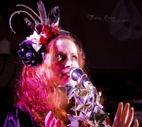

An
intimate night of Kate Bush songs
and personal memories
It is perhaps not surprising that Beck's performance's of Kate Bush's music has been described as the nearest thing to hearing Kate outside the real thing. Not only has Kate been a huge inspiration and lifelong musical love of Beck's but it is not surprising to learn they are in fact family.
Beck has often included one or two Kate Bush song covers in her original music live sets and it is through huge demand from friends and fans at those performances that she has consented to perform a limited number of performances dedicated to the music of her idol and greatest inspiration.
Naturally, with the recent performances by Kate herself, demand for such performances has only increased.
|
 Photograph courtesy of Tracey Swain at Tnt-photoart.co.uk |
The shows consist entirely of Kate
Bush's best known and loved songs as well as unusual and rare
stories of what it was like for Beck and her family growing up
with her famous cousin. Beck's welcoming and warming personality and humour are already known from her original live music work and with this she brings fans a personal connection to Kate Bush that no tribute band in the world can emulate. |
|
| We are currently booking venues around the UK for Beck's performances starting this coming autumn. The show is intended for for small to medium, atmospheric venues to create a relaxed, intimate environment for fans to enjoy the music, stories and chat. | ||
| For more infomation or to discuss including your venue on the tour please contact Jon Kershaw of Circus Bizarre Music on 0794 158 0323 or email jon@circusbizarre.co.uk | ||
| ... the interesting and unusual Beck Siàn, cousin of the one and only Kate Bush. Beck’s ethereal presence and astonishing voice captivated many. When she sang her cousin’s song, if you closed your eyes you could be persuaded that Kate herself was on the stage. | ||
| - Debs (Folk in the Barn, UK) | ||